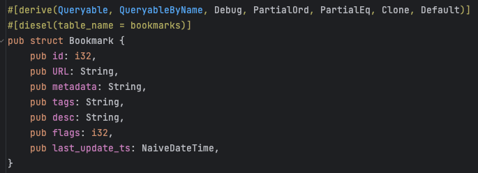
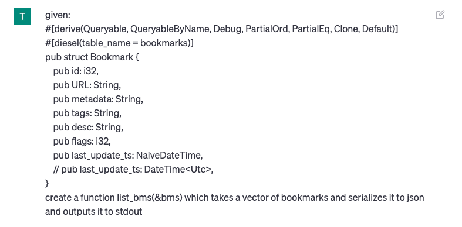
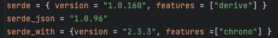
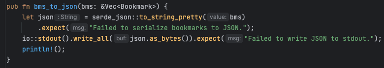
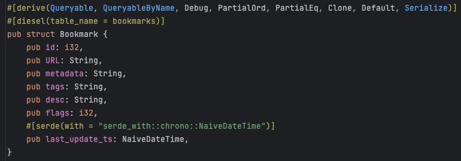
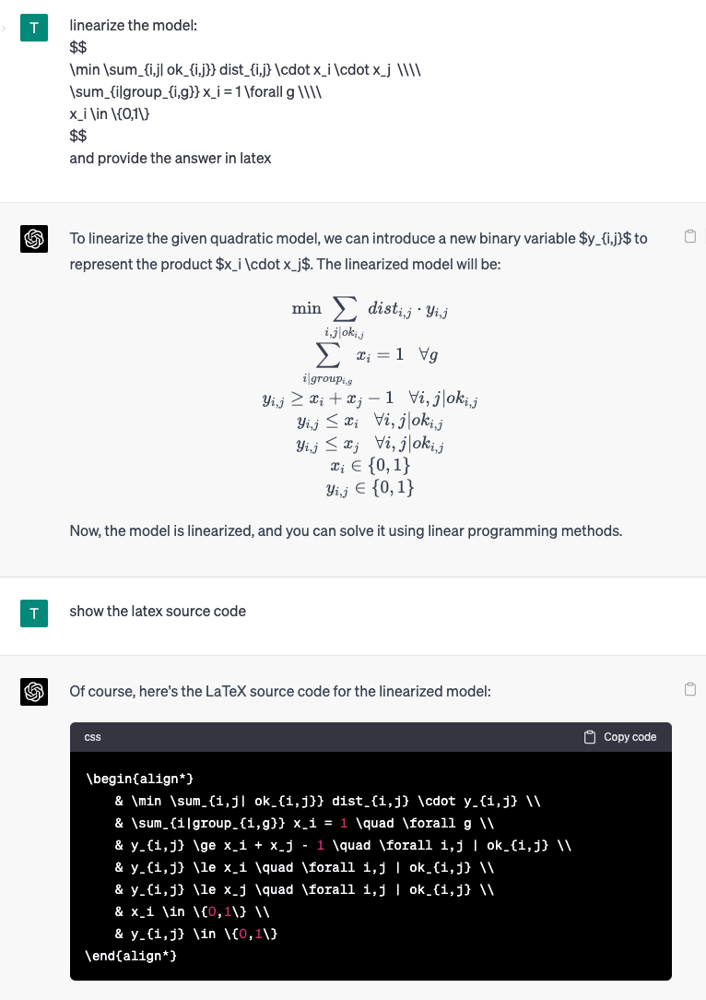

ChatGPT in Software Development
Describe the target, let the machine figure it out.
The world has changed.
I am showing examples of how ChatGPT is changing my workflow.
Infrastructure as Code
One way to deploy new infrastructure is to work interactively with the cloud’s provider graphical UI and rewrite it in the IaC suite of your choice.
However, re-writing it feels like redundant work.
Using terraform as an example there are several options:
terraform import- terraformer
- terracognita
- …
They all work (to some degree). However, the mental impedance for using them only once in a while is considerable, e.g. remembering the syntax, gotchas, etc…
This is a general problem with tools, which are used only sporadically.
My new workflow here is:
- create the components in AWS console
- describe them with
aws describe(sanitize if required) - let ChatGPT create the terraform (hcl)
- refine the terraform in a dialog with ChatGPT, e.g. parametrize the resources, add output, create modules, etc…
Metaprogramming
I got a feature request for bkmr to include plain text output.
This translates to implementing a function to serialize a Rust struct to json and print it.

Not a super fancy problem, but since I am not using Rust on daily basis it requires a bit of re-adjusting mental state in order get me back into Rust syntax, crate ecosystem, CI/CD, etc.
Not any more!
Ask ChatGPT:

The result is comprehensive advice which imports to add:

the actual working function:

the updated model:

Implementing a new feature took so from start to published crate less then 45 minutes.
Mathematical Programming
How can ChatGPT handle Math and especially Mathematical Programming? For this I selected a simple example of a non linear optimization problem 1:
Given multiple sets of data points. Select one point per set so that the distances between the points is minimal.
This can be modelled straight foward as a mixed integer quadratic problem.
Non-convex MIQP Model
$$ \min \sum_{i,j| ok_{i,j}} \color{darkblue}dist_{i,j}\cdot\color{darkred}x_i \cdot\color{darkred}x_j \\ \sum_{i|\color{darkblue}{\mathit{group}}_{i,g}} \color{darkred}x_i = 1 \forall g\\ \color{darkred}x_i \in {0,1} $$
I want to use a linear MIP solver, so I ask ChatGPT to linearize the model:

Result
\begin{align*} & \min \sum_{i,j| ok_{i,j}} dist_{i,j} \cdot y_{i,j} \\ & \sum_{i|group_{i,g}} x_i = 1 \quad \forall g \\ & y_{i,j} \ge x_i + x_j - 1 \quad \forall i,j | ok_{i,j} \\ & y_{i,j} \le x_i \quad \forall i,j | ok_{i,j} \\ & y_{i,j} \le x_j \quad \forall i,j | ok_{i,j} \\ & x_i \in {0,1} \\ & y_{i,j} \in {0,1} \end{align*}
The linearization is correct, as is the Latex output. This is pretty amazing! ChatGPT does not care which encoding you use to phrase a problem, it can speak Latex.
Here is the full article regarding the MP problem and solution.
Summary
The striking feature of ChatGPT for me is the promise of having ONE UNIFIED INTERFACE for all tasks that I need to get done.
It is a universal translation layer to all different domain specific languages and tools which I need to use for my daily work. DSL hell seems to be finally a thing of the past!
In addition to that it feels like having a personal consultant sitting next to you, waiting to answer your questions and provide you with valuable reasoning.
If I can describe the task and desired outcome properly, ChatGPT happily translate it into whatever API, tool, DSL, programming language, formula I need.
Productivity gain is huge, but the mental peace of mind of having the syntax problem solved is priceless.
Caveat Emptor
With all the incredible results it is important not to forget, that
-
the responsibility for any outcome lies with you. DO NOT rely on ChatGPT answers which you cannot 100% verify or do not fully comprehend!
In code this is easy, either it runs or it does not. It is much more difficult (if not impossible) outside of STEM (science, technology, engineering, math).
-
assume everything you enter to become part of ChatGPT’s knowledge body. It is like asking a question on StackOverflow.